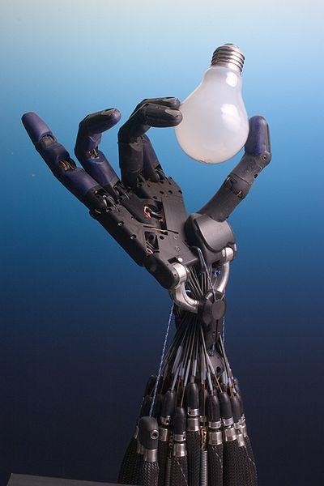
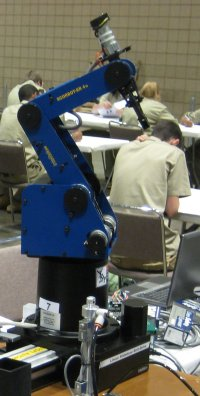

Robotics is an interdisciplinary field that integrates computer science
and engineering. Robotics involves design, construction, operation, and
use of robots. The goal of robotics is to design machines that can help
and assist humans. Robotics integrates fields of mechanical engineering,
electrical engineering, information engineering, mechatronics, electronics,
bioengineering, computer engineering, control engineering, software
engineering, among others.

Robotics develops machines that can substitute for humans and replicate
human actions. Robots can be used in many situations and for many purposes,
but today many are used in dangerous environments (including inspection
of radioactive materials, bomb detection and deactivation), manufacturing
processes, or where humans cannot survive (e.g. in space, underwater, in
high heat, and clean up and containment of hazardous materials and
radiation). Robots can take on any form but some are made to resemble
humans in appearance. This is said to help in the acceptance of a robot in
certain replicative behaviors usually performed by people. Such robots
attempt to replicate walking, lifting, speech, cognition, or any other
human activity. Many of today's robots are inspired by nature, contributing
to the field of bio-inspired robotics.

Certain robots require user input to operate while other robots function
autonomously. The concept of creating robots that can operate autonomously
dates back to classical times, but research into the functionality
and potential uses of robots did not grow substantially until the 20th c
entury. Throughout history, it has been frequently assumed by various
scholars, inventors, engineers, and technicians that robots will one day
be able to mimic human behavior and manage tasks in a human-like fashion.
Today, robotics is a rapidly growing field, as technological advances
continue; researching, designing, and building new robots serve various
practical purposes, whether domestically, commercially, or militarily.
Many robots are built to do jobs that are hazardous to people, such as
defusing bombs, finding survivors in unstable ruins, and exploring mines
and shipwrecks. Robotics is also used in STEM (science, technology,
engineering, and mathematics) as a teaching aid.